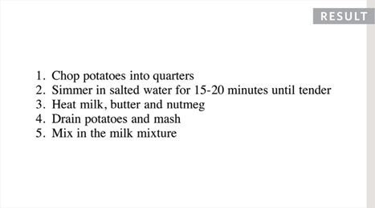

3
LISTS
- Numbered lists
- Bullet lists
- Definition lists
There are lots of occasions when we need to use lists. HTML provides us with three different types:
- Ordered lists are lists where each item in the list is numbered. For example, the list might be a set of steps for a recipe that must be performed in order, or a legal contract where each point needs to be identified by a section number.
- Unordered lists are lists that begin with a bullet point (rather than characters that indicate order).
- Definition lists are made up of a set of terms along with the definitions for each of those terms.
ORDERED LISTS
<ol>
The ordered list is created with the <ol> element.
<li>
Each item in the list is placed between an opening <li> tag and a closing </li> tag. (The li stands for list item.)
Browsers indent lists by default.
Sometimes you may see a type attribute used with the <ol> element to specify the type of bullet point (circles, squares, diamonds and so on). It is better to use the CSS list-style-type property covered on pages 333-335.

UNORDERED LISTS
<ul>
The unordered list is created with the <ul> element.
<li>
Each item in the list is placed between an opening <li> tag and a closing </li> tag. (The li stands for list item.)
Browsers indent lists by default.
Sometimes you may see a type attribute used with the <ul> element to specify the type of bullet point (circles, squares, diamonds and so on). It is better to use the CSS list-style-type property covered on pages 333-335.
DEFINITION LISTS
<dl>
The definition list is created with the <d1> element and usually consists of a series of terms and their definitions.
Inside the <d1> element you will usually see pairs of <dt> and <dd> elements.
<dt>
This is used to contain the term being defined (the definition term).
<dd>
This is used to contain the definition.
Sometimes you might see a list where there are two terms used for the same definition or two different definitions for the same term.

NESTED LISTS

You can put a second list inside an <li> element to create a sub-list or nested list.
Browsers display nested lists indented further than the parent list. In nested unordered lists, the browser will usually change the style of the bullet point too.
EXAMPLE
LISTS
Here you can see a main heading followed by an introductory paragraph. An unordered list is used to outline the ingredients and an ordered list is used to describe the steps.
<html>
<head>
<title>Lists</title>
</head>
<body>
<h1>Scrambled Eggs</h1>
<p>Eggs are one of my favourite foods. Here is a
recipe for deliciously rich scrambled eggs.</p>
<h2>Ingredients</h2>
<ul>
<li>2 eggs</li>
<li>1tbs butter</li>
<li>2tbs cream</li>
</ul>
<h2>Method</h2>
<ol>
<li>Melt butter in a frying pan over a medium
heat</li>
<li>Gently mix the eggs and cream in a bowl </li>
<li>Once butter has melted add cream and eggs</li>
<li>Using a spatula fold the eggs from the edge of
the pan to the center every 20 seconds (as if
you are making an omelette)</li>
<li>When the eggs are still moist remove from the
heat (it will continue to cook on the plate
until served)</li>
</ol>
</body>
</html>